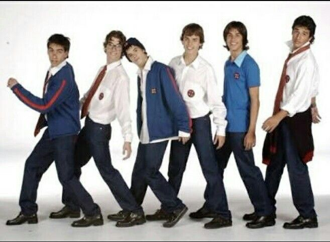

Uniforme de los Chicos del Elite Way School
Introducción
El uniforme escolar de Elite Way School está diseñado para fomentar un sentido de identidad y pertenencia entre los estudiantes, así como para mantener un estándar de presentación profesional y ordenada. A continuación, se detallan las especificaciones y normas relacionadas con el uniforme para chicos.
Componentes del Uniforme
-
Parte Inferior:
- Los estudiantes deben usar un pantalón de lona de color neutro (negro, azul marino o gris).
-
Parte Superior:
- Camisa Polo Roja: Una camisa polo de color rojo, con el logo del colegio bordado en el pecho.
- Camisa Blanca Formal: Una camisa formal de color blanco, también con el logo del colegio bordado en el pecho.
-
Corbata:
- Los estudiantes deben usar una corbata de color azul y rojo, que debe estar bien anudada y colocada correctamente.
-
Medias:
- Medias de color azul con el borde rojo. Las medias deben ser de longitud media o larga y mantenerse en buen estado, sin agujeros ni desgaste visible.
-
Calzado:
- Zapatos negros o azul marino, cerrados y de estilo formal, adecuados para un ambiente escolar.
-
Accesorio Opcional:
- Un gorro de lana de color rojo o azul puede ser usado como accesorio adicional, especialmente durante los meses más fríos. Este accesorio es opcional y debe llevarse de manera que complemente adecuadamente el uniforme.
-
Chaqueta:
- Los estudiantes pueden usar una chaqueta de mezclilla como parte del uniforme. La chaqueta debe estar en buen estado, sin rasgaduras ni adornos excesivos.

Uniforme de Coreografía o Deporte
Para las actividades de danza contemporánea y deporte, los chicos deben usar un uniforme específico diseñado para proporcionar comodidad y libertad de movimiento:
-
Pants:
- Un pants de color azul, que debe ser cómodo y permitir una amplia gama de movimientos.
-
Camisa:
- Una camisa de color celeste, adecuada para el ejercicio y las actividades físicas.
-
Chumpa:
- Una chumpa (chaqueta) de color azul, adecuada para mantener el calor antes y después de las sesiones de danza o deporte.
-
Calcetines:
- Calcetines blancos que deben ser cómodos y adecuados para el ejercicio.
-
Tennis:
- Tennis negros que brinden soporte adecuado y comodidad durante las actividades de danza y deporte.
Normas de Uso del Uniforme
-
Presentación Personal:
- Las prendas deben estar limpias y bien planchadas. Se espera que los estudiantes mantengan una apariencia ordenada y profesional en todo momento.
-
Complementos y Accesorios:
- Los complementos personales, como joyería y relojes, deben ser discretos y no deben distraer del aspecto general del uniforme.
- El uso de maquillaje no está permitido para los chicos, manteniendo una apariencia natural y apropiada para un entorno escolar.
-
Adaptación a Actividades:
- Durante las actividades físicas o deportivas, se permite el uso de ropa deportiva adecuada que cumpla con los estándares del colegio. Sin embargo, el uniforme debe ser usado antes y después de estas actividades.
-
Reemplazo y Mantenimiento:
- Los estudiantes son responsables de mantener su uniforme en buenas condiciones. En caso de daño o desgaste significativo, se espera que el uniforme sea reemplazado a la brevedad posible.
Consecuencias por Incumplimiento
-
Advertencias:
- Los estudiantes que no cumplan con las normas de uniforme recibirán una advertencia verbal o escrita.
-
Sanciones:
- Las infracciones repetidas pueden resultar en sanciones disciplinarias, que incluyen la detención o la suspensión de ciertas actividades escolares.
-
Notificación a Padres/Tutores:
- Los padres o tutores serán notificados en caso de incumplimientos continuos del reglamento de uniforme, y se les pedirá su colaboración para asegurar que su hijo cumpla con las normas establecidas.
Revisión del Reglamento
Este reglamento será revisado periódicamente para asegurar que se mantenga relevante y efectivo. Cualquier cambio será comunicado a toda la comunidad escolar con anticipación.
Al adherirse a este reglamento de uniforme, contribuimos a mantener la dignidad y el prestigio de Elite Way School. Agradecemos la cooperación de estudiantes, padres y personal en la implementación de estas normas.